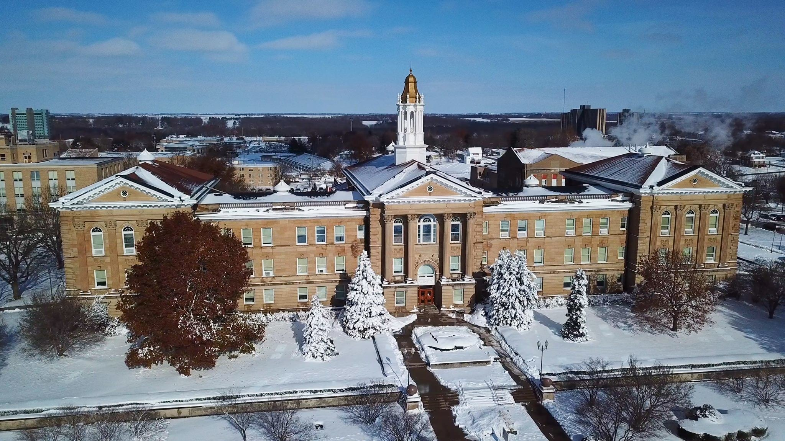
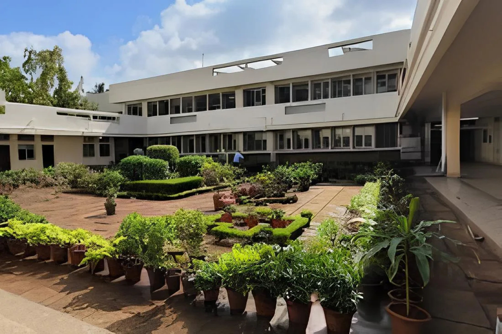
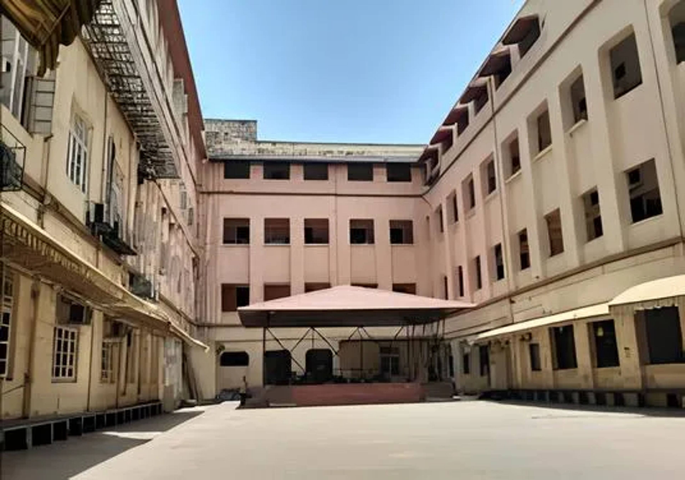

Doctoral Education
Degree: Doctor of Philosophy (Ph.D.) in Astrophysics
Institution: University of Oklahoma, Norman, Oklahoma, USA
Duration: August 2024 – Present
CGPA: 4.0/4.0

Master's Education
Degree: Master of Science (M.Sc.) in Physics
Concentration: Observational Radio Astronomy
Institution: Western Illinois University, Macomb, Illinois, USA
Duration: August 2022 – July 2024
CGPA: 4.0/4.0

Postgraduate Education
Degree: P.G. Diploma in Computer Science and Applications
Institution: S.N.D.T Women's University, Mumbai, India
Duration: August 2021 – August 2022
CGPA: 9.91/10

Undergraduate Education
Degree: Bachelor of Science (B.Sc.) in Physics
Institution: Ramnarain Ruia, Mumbai, India
Duration: May 2018 – May 2021
CGPA: 9.89/10